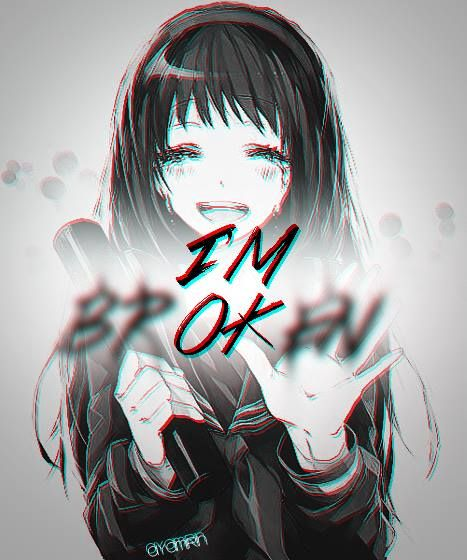

Разработал сайт: Жеребцов Андрей Дмитриевич
Краткая биография: родился в Липецке, еле отучился, с божьей помощью сдал ЕГЭ
С богом поступил в ВГУ на ФКН 1 курс, продолжаю обучение.
Сайт для получения depression
Связь с разработчиком:
Написать на почту
Страница в ВК